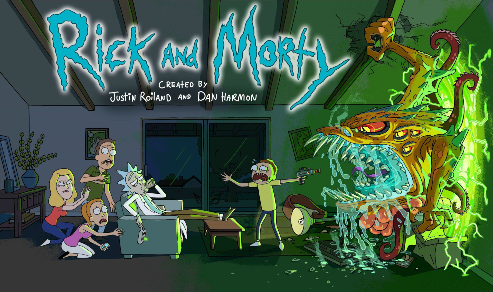
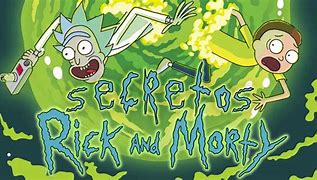

Rick y Morty

Sinopsis
Rick y Morty (en inglés: Rick and Morty) es una serie de televisión estadounidense de animacion para adultos creada por Justin Roiland y Dan Harmon en 2013 para Adult Swim. La serie sigue las desventuras de un cientÃfico, Rick, y su fácilmente influenciable nieto, Morty, quienes pasan el tiempo entre la vida doméstica y los viajes espaciales, temporales e intergalácticos. Roiland es el encargado de darle voz a Rick y a Morty, la serie también incluye las voces de Chris Parnell, Spencer Grammer y Sarah Chalke.
La serie se origina por un cortometraje rudimentario animado por Roiland para el festival de cine Channel 101 llamado Doc and Mharti, una parodia de los principales protagonistas de Back to the Future. Cuando la cadena NBC despidió a Harmon en 2013 por discusiones entre él y los ejecutivos de la serie que habÃa creado, Community, él y Roiland desarrollaron una serie basada en los personajes ya creados por Roiland
Datos y Curiosidades

Rick y Morty actualmente cuenta con 51 episodios repartidos en 5 temporadas
La temporada mas larga es la 1ra contando con 11 episodios mientras el resto unicamente con 10.
El eructo de Rick se le escapo a Roiland en una grabacion y desde entonces lo incorporo a la serie. Lo realiza tras beber cerveza light y una botella de agua
Roiland compuso la cancion Get Schwifty cuando era un nino